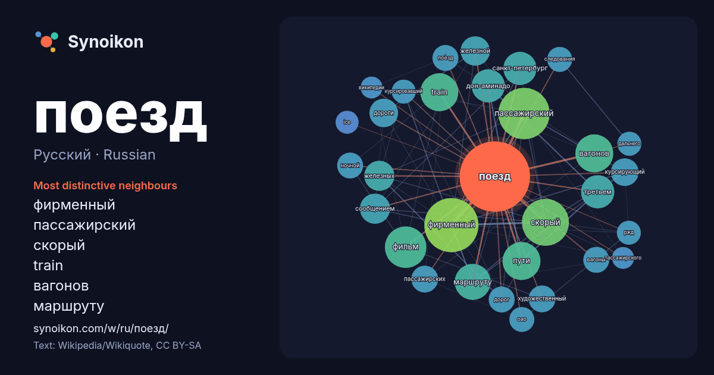

Русский · Russian · word of the day list
поезд
“train” · The words found around it in 1125 instances from Russian Wikipedia, Wikiquote.

Most distinctive neighbours
- фирменный 61×
- пассажирский 53×
- скорый 47×
- train 31×
- вагонов 27×
- маршруту 26×
- дон-аминадо 24×
- третьем 20×
- сообщением 19×
- санкт-петербург 18×
- пути 18×
- железных 18×
- курсирующий 17×
- пассажирских 15×
- по́езд 15×
- вагоны 14×
- ночной 14×
- следования 13×
- художественный 13×
- курсировавший 13×
× = how many times more often than in general Russian Wikipedia text.
Most frequent neighbours
- фирменный 61
- пассажирский 55
- скорый 46
- фильм 36
- название 31
- train 30
- вагонов 30
- пути 30
- маршруту 27
- дон-аминадо 23
- санкт-петербург 23
- третьем 23
- железных 19
- сообщением 19
- станции 19
- железной 18
- дороги 17
- курсирующий 16
- пассажирских 15
- художественный 15
In context
- Грузо́вой по́езд — группа грузовых вагонов во главе с локомотивом. Поезд грузовой предназначен для перевозки различных грузов (товаров). Устаревшее название — Wikipedia snippets · Грузовой поезд
- «Буреве́стник» — скоростной фирменный поезд №№ 702/701, 703/704, 705/706 (ранее — 153/154) сообщением Москва — Нижний Новгород. Начал курсировать в 1960-х Wikipedia snippets · Буревестник (поезд)
- Прямой поезд Берлин—Калининград (через Польшу) курсировал с 1993 по 2000 год, затем был заменён беспересадочным вагоном, который ходил в составе поезда Калининград—Гды … Wikipedia snippets · Калининград
- «Стриж» — товарное название скоростных поездов локомотивной тяги Talgo Intercity (Talgo 9), приобретённых ОАО «РЖД» для эксплуатации на российских и европейских Wikipedia snippets · Стриж (поезд)
- «Поезд-беглец», или «Сбежавший поезд» (англ. Runaway Train) — приключенческий фильм режиссёра Андрея Кончаловского. Этот фильм стал дебютом для Дэнни Wikipedia snippets · Поезд-беглец
- «Росси́я» —фирменный скорый поезд № 002Э/001Э, курсирующий по маршруту Владивосток — Москва — Владивосток. Поезд дальнего следования курсирует по самому Wikipedia snippets · Россия (поезд)
- «Дневной поезд» — советский художественный телефильм 1976 года. Две старые подруги Люба и Лиза, в прошлом — театральные актрисы, давно живущие в разных Wikipedia snippets · Дневной поезд
- Поезд Троцкого (Поезд председателя Реввоенсовета Республики) — личный бронированный железнодорожный состав народного комиссара военно-морских дел РСФСР Wikipedia snippets · Поезд Троцкого
More Russian words
- бог
- власть
- вода
- деньги
- жизнь
- здоровье
- золото
- искусство
- истина
- история
- климат
- кошка
- мост
- наука
- пища
- природа
- работа
- семья
- сердце
- смерть
- собака
- язык
Precomputed on 2026-10-09 with default settings (±5 words, medium corpus). The interactive map can refresh it with live data.